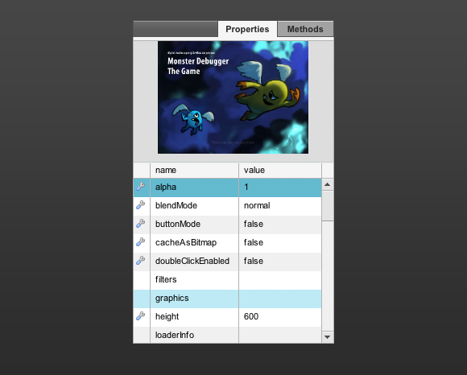

8. The properties panel
If you click on a folder in the application panel, all the properties of that item will be listed in the properties panel. The properties include basics like the x, y and z position but also custom properties are listed here. If a property is writable you'll be able to change it straight from the Monster Debugger and see the changes happen in real time. This can be a life saver when you have a positioning issue during for example art direction sessions. We use the following icons to make a distinction between different property types.
 Object containing children or properties.
Object containing children or properties.
 Read / write property.
Read / write property.
If the selected item is a DisplayObject like a Sprite, TextField, MovieClip, etc. the Monster Debugger will display a small preview above the properties list and highlight the item on the stage of your application.
If you come across any difficulties linking the client SWC to your Flash project please let us know about it on our GetSatisfaction site so we can try to help you.